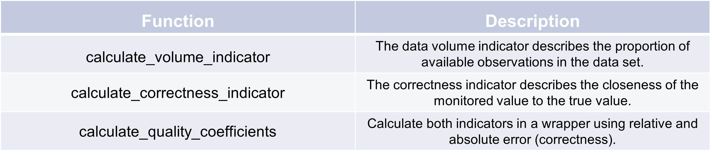

Data quality coefficients
In order to know how good the data quality of a parameter is, it can be examined by several data quality dimensions and metrics. This package focuses on data volume and observation accuracy as criteria for data quality. Paper https://jwcn-eurasipjournals.springeropen.com/articles/10.1186/s13638-018-1069-6 is largely followed.
Data volume
The data volume refers to the size of a dataset, which can indicate the operational status of a given sensor node.
If a node has less data compared to other nodes, it is considered that some data has been lost.
The data volume thus reflects the dataset’s availability and the reliability of the associated logical outcomes.
For instance, when performing a mean operation on two datasets of different sizes for a particular observation object,
the dataset with the smaller volume is assumed to be less reliable.
Here’s an example of how to use the calculate_data_volume_indicator function:
>>> import pandas as pd
>>> n_nodes = 5
>>> monitoring_duration = 100 # in arbitrary units
>>> time_interval = 10 # in arbitrary units
>>> node_sampling_data = [
>>> [1, 2, 3, None, 5], # Example data for node 1
>>> [1, 2, 3, 4, 5], # Example data for node 2
>>> ]
>>> test = TSCC.assessment.calculate_data_volume_indicator(n_nodes, monitoring_duration, time_interval, node_sampling_data)
>>> print(f'Data Volume Indicator (qv): {test}')
Data Volume Indicator (qv): 0.18000000000000002
Our expected result of qv=0.2 is a little underachieved due to one lost data point in the first node. The exact calculation for this indicator is: (10 x 9) / (5 x 100) = 0.18. Final result is that data is missing.
Data correctness
The correctness indicator measures how closely the monitored value aligns with a reference value.
For data obtained from a single sampling of a specific physical quantity, the data is considered
correct if the difference between the monitored and the rference value is up to a specified threshold.
Here’s an example of how to use the calculate_correctness_indicator function:
>>> n_nodes = 2
>>> error_threshold = 1.0 # Error threshold for correctness
>>> # Example data for each node (value_real, value_observed)
>>> node_data_sequence = [
>>> [(24, 26, 24, 25, 26), (26, 25, 24, 25, 26)], # Example data for node 1
>>> [(20, 23, 22, 18, 21), (21, 20, 22, 20, 21)], # Example data for node 2
>>> ]
>>> test = TSCC.assessment.calculate_correctness_indicator(n_nodes, node_data_sequence, error_threshold)
>>> print(f'Correctness Indicator (qa): {test}')
Correctness Indicator (qa): 0.7
The perfect correctness is not achieved due to three datapoints, which are over our chosen error threshold. With larger examples and millions of datapoints and nodes, the error threshold should be adjusted wisely so that you don’t get a result of 0.99+.